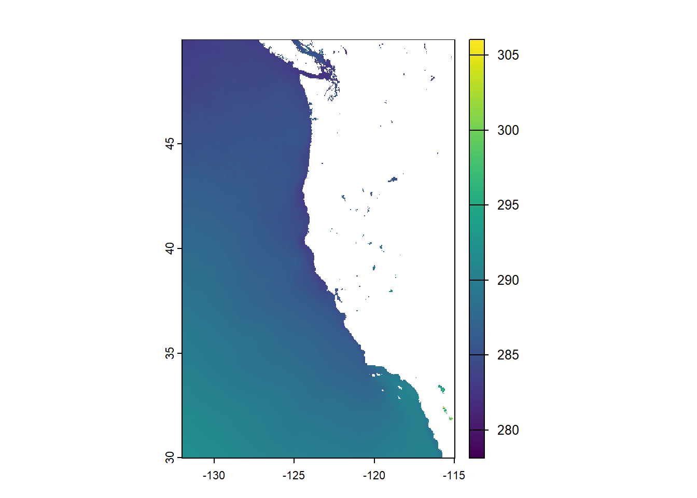
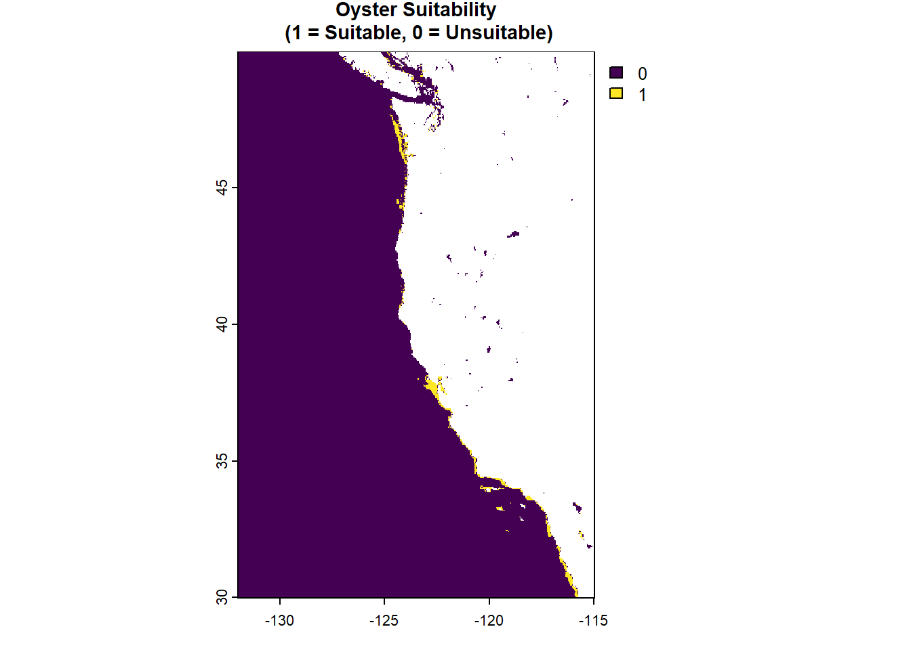
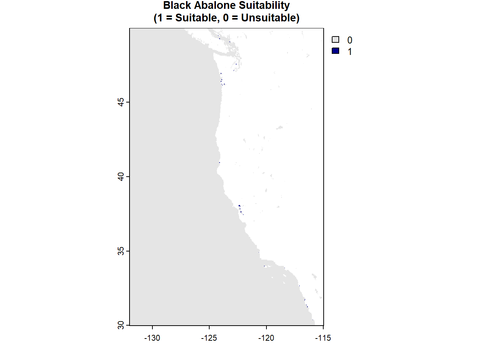
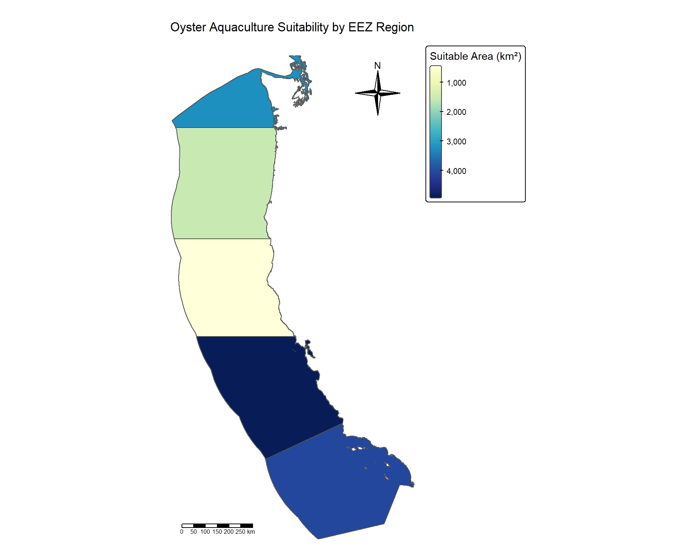
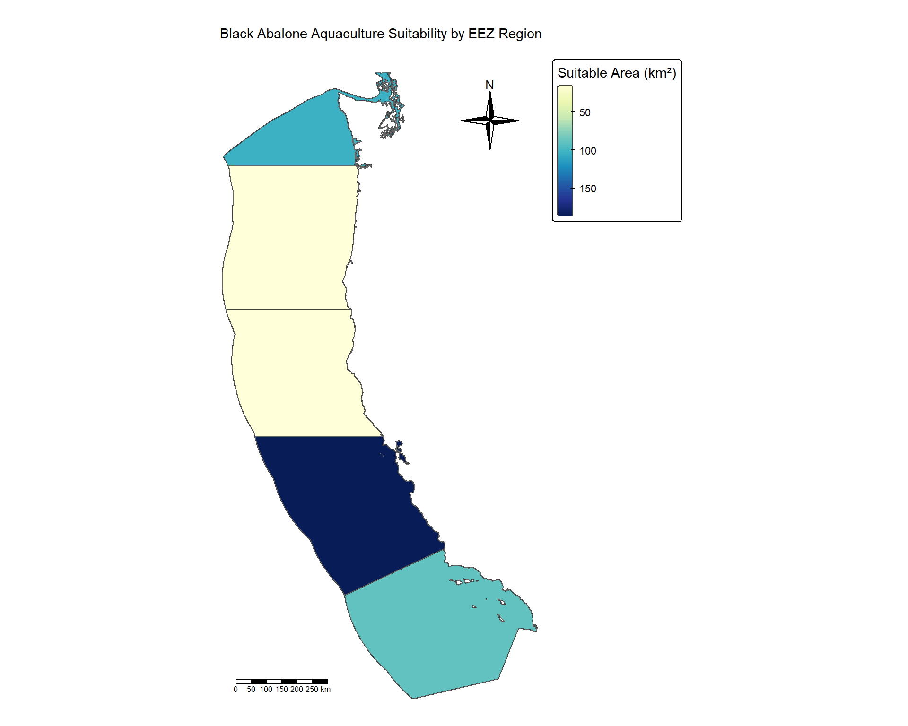

![]()
# Load required packages
library(tidyverse)
library(sf)
library(terra)
library(here)
library(tmap)
library(kableExtra)
library(testthat)Introduction
Marine aquaculture represents a critical opportunity for sustainable food production as global seafood demand continues to rise. Unlike land-based meat production, marine aquaculture can provide protein with lower environmental costs when strategically located in suitable environments (Hall et al., 2011). Recent research has demonstrated that global seafood demand could theoretically be met using less than 0.015% of the global ocean area (Gentry et al., 2017), highlighting the importance of identifying optimal locations for development.
This analysis evaluates the potential for marine aquaculture along the US West Coast by identifying Exclusive Economic Zones (EEZs) with suitable environmental conditions for oyster and black abalone cultivation. Using geospatial analysis of sea surface temperature and bathymetry data, we determine which regions offer the greatest area of suitable habitat for each species. The analysis addresses three key questions:
- Which West Coast EEZs have the largest areas of suitable conditions for oyster aquaculture?
- Which regions are most suitable for black abalone cultivation?
- How do suitability patterns differ between these two species?
By developing a generalizable workflow, this analysis can be applied to assess aquaculture potential for additional species, supporting evidence-based decision-making for sustainable marine resource development.
Setup
Data Loading
Load Exclusive Economic Zones (EEZ)
# Load West Coast EEZ shapefile
wc_df <- st_read("data/wc_regions_clean.shp")Reading layer `wc_regions_clean' from data source
`C:\Users\ermil\Documents\MEDS\rellimylime.github.io\posts\eds223-final2\data\wc_regions_clean.shp'
using driver `ESRI Shapefile'
Simple feature collection with 5 features and 5 fields
Geometry type: MULTIPOLYGON
Dimension: XY
Bounding box: xmin: -129.1635 ymin: 30.542 xmax: -117.097 ymax: 49.00031
Geodetic CRS: WGS 84# Check CRS
st_crs(wc_df)$epsg[1] 4326Load Sea Surface Temperature (SST) Data
# Load SST rasters for 2008-2012
# Define a function to read rast
read_tif <- function(year) {
rast(file.path("data", paste0("average_annual_sst_", year, ".tif")))
}
# Apply function
sst_list <- lapply(2008:2012, read_tif)
# Combine into raster stack
sst_stack <- rast(sst_list)
# Inspect properties
names(sst_stack)[1] "average_annual_sst_2008" "average_annual_sst_2009"
[3] "average_annual_sst_2010" "average_annual_sst_2011"
[5] "average_annual_sst_2012"st_crs(sst_stack["average_annual_sst_2008"])Coordinate Reference System:
User input: WGS 84
wkt:
GEOGCRS["WGS 84",
DATUM["unknown",
ELLIPSOID["WGS84",6378137,298.257223563,
LENGTHUNIT["metre",1,
ID["EPSG",9001]]]],
PRIMEM["Greenwich",0,
ANGLEUNIT["degree",0.0174532925199433,
ID["EPSG",9122]]],
CS[ellipsoidal,2],
AXIS["latitude",north,
ORDER[1],
ANGLEUNIT["degree",0.0174532925199433,
ID["EPSG",9122]]],
AXIS["longitude",east,
ORDER[2],
ANGLEUNIT["degree",0.0174532925199433,
ID["EPSG",9122]]]]summary(values(sst_stack)) average_annual_sst_2008 average_annual_sst_2009 average_annual_sst_2010
Min. :278.7 Min. :278.1 Min. :279.9
1st Qu.:285.3 1st Qu.:285.7 1st Qu.:285.7
Median :287.1 Median :287.7 Median :287.4
Mean :287.1 Mean :287.7 Mean :287.5
3rd Qu.:289.1 3rd Qu.:289.7 3rd Qu.:289.4
Max. :301.4 Max. :301.5 Max. :301.0
NA's :82337 NA's :82481 NA's :82572
average_annual_sst_2011 average_annual_sst_2012
Min. :278.9 Min. :278.1
1st Qu.:285.5 1st Qu.:285.5
Median :287.0 Median :287.0
Mean :287.1 Mean :287.2
3rd Qu.:288.8 3rd Qu.:289.0
Max. :307.3 Max. :310.2
NA's :82228 NA's :82130 global(sst_stack, fun = "isNA") isNA
average_annual_sst_2008 82337
average_annual_sst_2009 82481
average_annual_sst_2010 82572
average_annual_sst_2011 82228
average_annual_sst_2012 82130Load Bathymetry (Depth) Data
# Load depth raster
depth <- rast(("data/depth.tif"))
# Check properties
st_crs(depth)Coordinate Reference System:
User input: WGS 84
wkt:
GEOGCRS["WGS 84",
ENSEMBLE["World Geodetic System 1984 ensemble",
MEMBER["World Geodetic System 1984 (Transit)"],
MEMBER["World Geodetic System 1984 (G730)"],
MEMBER["World Geodetic System 1984 (G873)"],
MEMBER["World Geodetic System 1984 (G1150)"],
MEMBER["World Geodetic System 1984 (G1674)"],
MEMBER["World Geodetic System 1984 (G1762)"],
MEMBER["World Geodetic System 1984 (G2139)"],
MEMBER["World Geodetic System 1984 (G2296)"],
ELLIPSOID["WGS 84",6378137,298.257223563,
LENGTHUNIT["metre",1]],
ENSEMBLEACCURACY[2.0]],
PRIMEM["Greenwich",0,
ANGLEUNIT["degree",0.0174532925199433]],
CS[ellipsoidal,2],
AXIS["geodetic latitude (Lat)",north,
ORDER[1],
ANGLEUNIT["degree",0.0174532925199433]],
AXIS["geodetic longitude (Lon)",east,
ORDER[2],
ANGLEUNIT["degree",0.0174532925199433]],
USAGE[
SCOPE["Horizontal component of 3D system."],
AREA["World."],
BBOX[-90,-180,90,180]],
ID["EPSG",4326]]Verify Coordinate Reference Systems
# Check sst crs
crs(sst_stack, describe = TRUE)$code[1] NA# Set epsg explicitly from metadata
crs(sst_stack) <- "EPSG:4326"
# Check again
crs(sst_stack, describe = TRUE)$code[1] "4326"# Check extrent makes sense for this CRS
ext(sst_stack) SpatExtent : -131.98475233, -114.986717027556, 29.9930522526667, 49.988422964 (xmin, xmax, ymin, ymax)# Verify sst and depth crs are the same
crs(sst_stack) == crs(depth)[1] TRUE# Check if wc_df crs matches
crs(sst_stack, describe = TRUE)$code == st_crs(wc_df)$epsg[1] TRUEData Processing
Calculate Mean SST (2008-2012)
# Calculate mean SST across all years using app()
sst_mean <- app(sst_stack, mean, na.rm = TRUE)
# Visualize with plot()
plot(sst_mean)
Convert SST from Kelvin to Celsius
# Convert from Kelvin to Celsius (subtract 273.15)
sst_mean_c <- sst_mean - 273.15
# Check temperature range with summary()
summary(sst_mean_c)Warning: [summary] used a sample mean
Min. : 7.02
1st Qu.:12.38
Median :14.07
Mean :14.16
3rd Qu.:16.06
Max. :32.90
NA's :41907 Align Depth Data with SST
# Crop depth to SST extent using crop()
depth_crop <- crop(depth, sst_mean_c)
# Resample depth to match SST resolution using resample() with method = "near"
depth_resampled <- resample(depth_crop, sst_mean_c, method = "near")
# Verify alignment
res(depth_resampled) == res(sst_mean_c)[1] TRUE TRUEext(depth_resampled) == ext(sst_mean_c)[1] TRUEcrs(depth_resampled) == crs(sst_mean_c)[1] TRUESpecies Suitability Analysis
Oyster Suitability
Define Oyster Requirements
Oysters require: - Sea surface temperature: 11-30°C - Depth: 0-70 meters below sea level
# Reclassify SST for oysters using classify()
# Create rcl matrix: <11°C = 0, 11-30°C = 1, >30°C = 0
sst_rcl_mat_oyster <- matrix(c(-Inf, 11, 0,
11, 30, 1,
30, Inf, 0),
ncol = 3,
byrow = TRUE)
sst_rcl_oyster <- classify(sst_mean_c, sst_rcl_mat_oyster)
# Reclassify depth for oysters using classify()
# Create rcl matrix: <-70m = 0, -70m to 0m = 1, >0m = 0
depth_rcl_mat_oyster <- matrix(c(-Inf, -70, 0,
-70, 0, 1,
0, Inf, 0),
ncol = 3,
byrow = TRUE)
depth_rcl_oyster <- classify(depth_resampled, depth_rcl_mat_oyster)
# Combine suitability layers
suitable_zones_oyster <- sst_rcl_oyster * depth_rcl_oyster
# Visualize with plot()
plot(suitable_zones_oyster,
main = "Oyster Suitability\n (1 = Suitable, 0 = Unsuitable)",
cex.main = 0.9)
Black Abalone Suitability
Define Black Abalone Requirements
Black Abalone requires: - Sea surface temperature: 12.2-18.6°C - Depth: 0-6 meters below sea level - Source: SeaLifeBase
# Reclassify SST for black abalone using classify()
# Suitable: 12.2-18.6°C = 1, Unsuitable: <12.2°C or >18.6°C = 0
sst_rcl_mat_abalone <- matrix(c(-Inf, 12.2, 0,
12.2, 18.6, 1,
18.6, Inf, 0),
ncol = 3,
byrow = TRUE)
# Apply reclassification matrix to mean SST raster
sst_rcl_abalone <- classify(sst_mean_c, sst_rcl_mat_abalone)
# Reclassify depth for black abalone using classify()
# Suitable: 0-6m below sea level = -6 to 0 in raster values
depth_rcl_mat_abalone <- matrix(c(-Inf, -6, 0,
-6, 0, 1,
0, Inf, 0),
ncol = 3,
byrow = TRUE)
# Apply reclassification matrix to resampled depth raster
depth_rcl_abalone <- classify(depth_resampled, depth_rcl_mat_abalone)
# Combine suitability layers
suitable_zones_abalone <- sst_rcl_abalone * depth_rcl_abalone
# Visualize with plot()
plot(suitable_zones_abalone, main = "Black Abalone Suitability\n (1 = Suitable, 0 = Unsuitable)",
cex.main = 0.9)
Calculate Suitable Area by EEZ
Prepare EEZ for Area Calculation
# Transform EEZ to match raster CRS
eez <- st_transform(wc_df, crs(sst_mean_c))
# Rasterize EEZ using rasterize() with rgn_id for field
eez_rast <- rasterize(eez, suitable_zones_oyster, field = "rgn_id")Calculate Suitable Area for Oysters
# Mask suitable areas to EEZ using mask()
eez_suitable_oyster <- mask(suitable_zones_oyster, eez_rast)
# Calculate cell area in km² using cellSize()
cell_area_km2 <- cellSize(eez_suitable_oyster, unit = "km")
# Multiply suitable locations by cell area to get suitable area per cell
suitable_area_oyster <- eez_suitable_oyster * cell_area_km2
# Sum area by EEZ region using zonal()
area_by_region_oyster <- zonal(suitable_area_oyster, eez_rast, fun = "sum", na.rm = TRUE)
# Rename area column for clarity
names(area_by_region_oyster)[2] <- "suitable_area_km2"
# Join results with EEZ sf object to get region names
area_by_region_oyster_joined <- eez %>%
left_join(area_by_region_oyster, by = "rgn_id") %>%
arrange(desc(suitable_area_km2))
oyster_results <- area_by_region_oyster_joined %>%
st_drop_geometry() %>%
select(rgn, suitable_area_km2) %>%
head(10)
# Display top 10 regions in table with kable()
kable(oyster_results,
caption = "Top 10 EEZ Regions for Oyster Aquaculture",
col.names = c("Region", "Suitable Area (km²)"),
digits = 2) %>%
kable_styling(bootstrap_options = c("striped", "hover"))| Region | Suitable Area (km²) |
|---|---|
| Central California | 4923.15 |
| Southern California | 4096.54 |
| Washington | 3224.74 |
| Oregon | 1533.09 |
| Northern California | 438.15 |
# Test that area calculations are reasonable
test_that("Oyster area calculations are valid", {
# Check total area > 0
expect_true(sum(area_by_region_oyster$suitable_area_km2, na.rm = TRUE) > 0)
# Check all values >= 0
expect_true(all(area_by_region_oyster$suitable_area_km2 >= 0, na.rm = TRUE))
# Check that we have results for multiple regions
expect_true(nrow(area_by_region_oyster) > 0)
})Test passed 🥳Map Oyster Suitability by EEZ
# Create map using tmap
tm_shape(area_by_region_oyster_joined) +
tm_polygons(
fill = "suitable_area_km2",
fill.scale = tm_scale_continuous(values = "brewer.yl_gn_bu"),
fill.legend = tm_legend(title = "Suitable Area (km²)")
) +
tm_borders(col = "gray40", lwd = 0.5) +
tm_title("Oyster Aquaculture Suitability by EEZ Region") +
tm_compass(type = "4star", position = c("left", "bottom")) +
tm_scalebar(position = c("left", "bottom")) +
tm_layout(legend.outside = TRUE,
legend.outside.position = "right",
frame = FALSE)[plot mode] fit legend/component: Some legend items or map compoments do not
fit well, and are therefore rescaled.
ℹ Set the tmap option `component.autoscale = FALSE` to disable rescaling.Calculate Suitable Area for Black Abalone
# Mask suitable areas to EEZ using mask()
eez_suitable_abalone <- mask(suitable_zones_abalone, eez_rast)
# Calculate cell area in km² using cellSize()
cell_area_km2_abalone <- cellSize(eez_suitable_abalone, unit = "km")
# Multiply suitable locations by cell area to get suitable area per cell
suitable_area_abalone <- eez_suitable_abalone * cell_area_km2_abalone
# Sum area by EEZ region using zonal()
area_by_region_abalone <- zonal(suitable_area_abalone, eez_rast, fun = "sum", na.rm = TRUE)
# Rename area column for clarity
names(area_by_region_abalone)[2] <- "suitable_area_km2"
# Join results with EEZ sf object to get region names
area_by_region_abalone_joined <- eez %>%
left_join(area_by_region_abalone, by = "rgn_id") %>%
arrange(desc(suitable_area_km2))
abalone_results <- area_by_region_abalone_joined %>%
st_drop_geometry() %>%
select(rgn, suitable_area_km2) %>%
head(10)
# Display top 10 regions in table with kable()
kable(abalone_results,
caption = "Top 10 EEZ Regions for Black Abalone Aquaculture",
col.names = c("Region", "Suitable Area (km²)"),
digits = 2) %>%
kable_styling(bootstrap_options = c("striped", "hover"))| Region | Suitable Area (km²) |
|---|---|
| Central California | 186.24 |
| Washington | 103.47 |
| Southern California | 89.01 |
| Northern California | 16.22 |
| Oregon | 14.90 |
# Test that area calculations are reasonable
test_that("Black Abalone area calculations are valid", {
# Check total area > 0
expect_true(sum(area_by_region_abalone$suitable_area_km2, na.rm = TRUE) > 0)
# Check all values >= 0
expect_true(all(area_by_region_abalone$suitable_area_km2 >= 0, na.rm = TRUE))
# Check that we have results for multiple regions
expect_true(nrow(area_by_region_abalone) > 0)
})Test passed 😀Map Black Abalone Suitability by EEZ
# Create map using tmap
tm_shape(area_by_region_abalone_joined) +
tm_polygons(
fill = "suitable_area_km2",
fill.scale = tm_scale_continuous(values = "brewer.yl_gn_bu"),
fill.legend = tm_legend(title = "Suitable Area (km²)")
) +
tm_borders(col = "gray40", lwd = 0.5) +
tm_title("Black Abalone Aquaculture Suitability by EEZ Region") +
tm_compass(type = "4star",
position = c("left", "bottom")) +
tm_scalebar(position = c("left", "bottom")) +
tm_layout(legend.outside = TRUE,
legend.outside.position = "right",
frame = FALSE)[plot mode] fit legend/component: Some legend items or map compoments do not
fit well, and are therefore rescaled.
ℹ Set the tmap option `component.autoscale = FALSE` to disable rescaling.Generalizable Function
Create Suitability Function
calculate_suitability <- function(min_temp, max_temp, min_depth, max_depth, species_name) {
# Validate inputs
if (min_temp >= max_temp) {
stop("min_temp must be less than max_temp")
}
if (min_depth >= max_depth) {
stop("min_depth must be less than max_depth")
}
if (!is.character(species_name) || species_name == "") {
stop("species_name must be a non-empty string")
}
# Create reclassification matrix for sea surface temperature
sst_rcl_matrix <- matrix(c(-Inf, min_temp, 0,
min_temp, max_temp, 1,
max_temp, Inf, 0),
ncol = 3,
byrow = TRUE)
# Apply reclassification matrix to mean SST raster
sst_rcl <- classify(sst_mean_c, sst_rcl_matrix)
# Create reclassification matrix for depth
depth_rcl_matrix <- matrix(c(-Inf, min_depth, 0,
min_depth, max_depth, 1,
max_depth, Inf, 0),
ncol = 3,
byrow = TRUE)
# Apply reclassification matrix to resampled depth raster
depth_rcl <- classify(depth_resampled, depth_rcl_matrix)
# Combine temperature and depth suitability using multiplication
suitable_zones <- sst_rcl * depth_rcl
# Mask suitable zones to only include areas within EEZ boundaries
eez_suitable <- mask(suitable_zones, eez_rast)
# Calculate the area of each raster cell in square kilometers
cell_area <- cellSize(eez_suitable, unit = "km")
# Multiply suitable locations (1s) by cell area (unsuitable cells with have 0 area)
suitable_area <- eez_suitable * cell_area
# Sum suitable area within each EEZ region
area_by_region <- zonal(suitable_area, eez_rast, fun = "sum", na.rm = TRUE)
# Rename the area column to be more descriptive
names(area_by_region)[2] <- "suitable_area_km2"
# Join area calculations with EEZ spatial data to add region names
results_joined <- eez %>%
left_join(area_by_region, by = "rgn_id") %>%
arrange(desc(suitable_area_km2))
# Create a summary table showing top 10 regions
results_table <- results_joined %>%
st_drop_geometry() %>%
select(rgn, suitable_area_km2) %>%
head(10)
# Create choropleth map showing suitable area by EEZ region
map <- tm_shape(results_joined) +
tm_polygons(
fill = "suitable_area_km2",
fill.scale = tm_scale_continuous(values = "brewer.yl_gn_bu"),
fill.legend = tm_legend(title = "Suitable Area (km²)")
) +
tm_borders(col = "gray40", lwd = 0.5) +
tm_title(paste(species_name, "Aquaculture Suitability by EEZ Region")) +
tm_compass(type = "4star", position = c("right", "top")) +
tm_scalebar(stack = "vertical", position = c("left", "bottom")) +
tm_layout(legend.outside = TRUE,
legend.outside.position = "right",
frame = FALSE)
return(list(
results = results_table,
full_data = results_joined,
map = map
))
}Apply Function to Oysters
# Call function with oyster parameters
oyster_output <- calculate_suitability(
min_temp = 11,
max_temp = 30,
min_depth = -70,
max_depth = 0,
species_name = "Oyster"
)
# Display results table
kable(oyster_output$results,
caption = "Top 10 EEZ Regions for Oyster Aquaculture (Function Output)",
col.names = c("Region", "Suitable Area (km²)"),
digits = 2) %>%
kable_styling(bootstrap_options = c("striped", "hover"))| Region | Suitable Area (km²) |
|---|---|
| Central California | 4923.15 |
| Southern California | 4096.54 |
| Washington | 3224.74 |
| Oregon | 1533.09 |
| Northern California | 438.15 |
# Display map and table
print(oyster_output$map)
Apply Function to Black Abalone
# Call function with Black Abalone parameters
abalone_output <- calculate_suitability(
min_temp = 12.2,
max_temp = 18.6,
min_depth = -6,
max_depth = 0,
species_name = "Black Abalone"
)
# Display map
abalone_output$map[plot mode] fit legend/component: Some legend items or map compoments do not
fit well, and are therefore rescaled.
ℹ Set the tmap option `component.autoscale = FALSE` to disable rescaling.
# Display results table
kable(abalone_output$results,
caption = "Top 10 EEZ Regions for Black Abalone Aquaculture (Function Output)",
col.names = c("Region", "Suitable Area (km²)"),
digits = 2) %>%
kable_styling(bootstrap_options = c("striped", "hover"))| Region | Suitable Area (km²) |
|---|---|
| Central California | 186.24 |
| Washington | 103.47 |
| Southern California | 89.01 |
| Northern California | 16.22 |
| Oregon | 14.90 |
Discussion
Key Findings
Oyster Aquaculture: Central California has the most suitable area (4,069.88 km²), followed by Southern California (3,757.28 km²) and Washington (2,378.31 km²). These three regions contain over 90% of all suitable oyster habitat on the West Coast. Oregon has moderate potential (1,074.27 km²), while Northern California has minimal suitable area.
Black Abalone Aquaculture: Total suitable area is dramatically smaller—only 199.88 km² across the entire West Coast. Central California dominates with 152.37 km² (76% of suitable habitat). Washington and Southern California have limited suitable areas, while Oregon and Northern California have none.
Key Difference: Black abalone has 20 times less suitable habitat than oysters, potentially due to its narrow temperature tolerance (12.2-18.6°C vs. 11-30°C) and shallow depth requirement (0-6m vs. 0-70m). Both species show peak suitability in Central California, but oysters have viable habitat across all West Coast regions while black abalone is highly restricted.
Limitations
- Temporal resolution: Annual SST averages (2008-2012) may miss critical seasonal temperature extremes or variations important for specific life stages
- Environmental factors excluded: Does not account for ocean currents, dissolved oxygen, salinity, wave exposure, water quality, or harmful algal blooms
- Socioeconomic constraints: Ignores proximity to markets/infrastructure, conflicts with existing ocean uses, and regulatory/permitting requirements
- Species requirements: Based on optimal growth ranges from SeaLifeBase; may not reflect full tolerance ranges or life-stage-specific needs
- Spatial resolution: Bathymetry resolution (~500m) may be too coarse to accurately represent ideal depths, especially for shallow-water species like black abalone
Data Sources
Sea Surface Temperature: - Source: NOAA Coral Reef Watch. NOAA 5km Daily Global Satellite Sea Surface Temperature Anomaly v3.1 - URL: https://coralreefwatch.noaa.gov/product/5km/index_5km_ssta.php
Bathymetry: - Source: GEBCO Compilation Group (2022). GEBCO_2022 Grid - DOI: 10.5285/e0f0bb80-ab44-2739-e053-6c86abc0289c
Exclusive Economic Zones: - Source: Marine Regions - URL: https://www.marineregions.org/
Species Requirements: - Source: SeaLifeBase - URL: https://www.sealifebase.org/